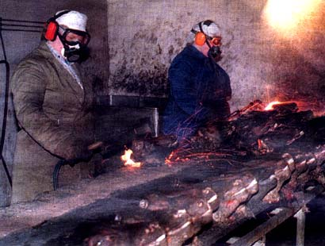

No you're not mistaken, those really are severed sheep heads.
And yes, their faces really are being scorched with blow torches.
Jacqueline (in blue) got the hang of it quickly, I got a little excited
and burned a dog.
I guess we kinda jumped right to step 2. Would you like to see
step 1?
back